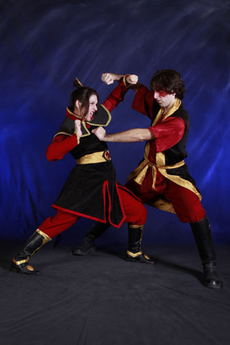
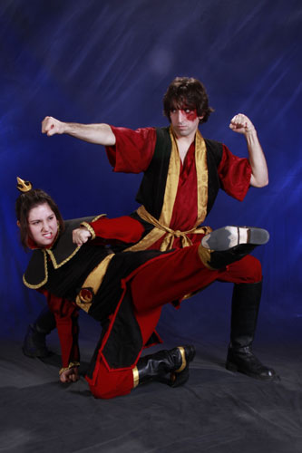
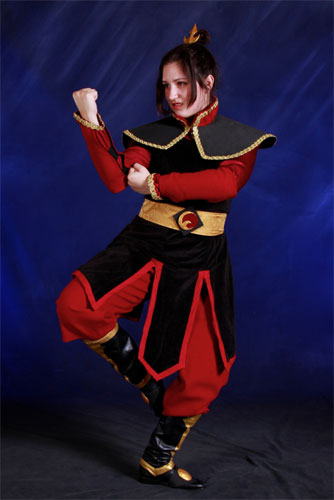
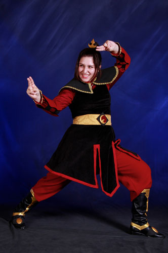
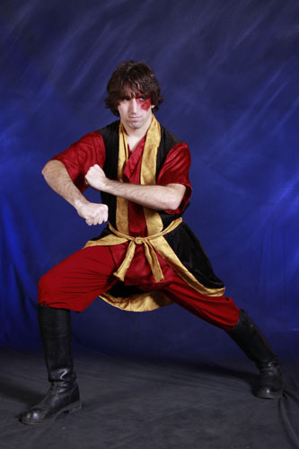
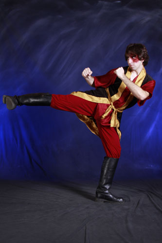

These costumes were a made for Nebraskon 2010 in Omaha, Nebraska. Since John and I are both badass martial artist siblings with
big ambitions, it was only natural that we dress up as Azula and Zuko, right? I know we're a little behind the times
on the Avatar: the Last Airbender craze, but that doesn't mean we can't still rock it.
My main mission for these costumes were to get the textures right. I had a ton of black velvet that Gunnar aquired
for me from a garage sale, and that was really my inspiration. I wanted the costumes to feel like royalty, not just look
accurate to the cartoon. So the undershirts are matching faux-silk, the boots are real leather, and the gold belts/trim is made from
a silky brocade-like fabric.
My fire nation medallion and fire princess crown were made from sculpey which I shaped, baked, painted, and glazed. My Azula boots were painted with gold
paint and then glazed. The only thing I am unhappy with in these costumes is Azula's armor. It may or may not get fixed
before Akon 2011, but with the pretty gold braid trim, it does the job for now!
Photos were taken at Ikkicon 2011 in Austin Texas by the wonderful Brendon of
Shattered Images Photography.






Back to Costume Gallery